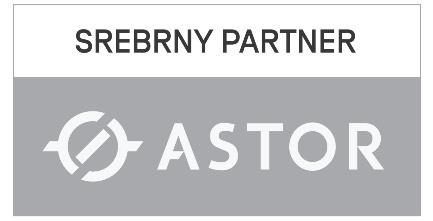

Jesteśmy Vision Project
działamy od 2006 roku, ale z automatyką przemysłową mamy styczność od 2001. Integrujemy rozwiązania przemysłowe, od pomysłu, przez projekt, wytworzenie, programowanie i wdrożenie u klienta. Tworzymy zespół osób, którzy z pasją i zaangażowaniem podchodzi do swojej pracy.
Specjalizujemy się
wiedzą z dziedziny automatyki przemysłowej z wykorzystaniem najnowszych osiągnięć technicznych w procesach produkcyjnych i technologicznych dla małych i dużych firm.
Przy obecnym stanie szeroko rozwiniętych wszystkich dziedzin ogólnie pojętej techniki, bardzo ważna jest umiejętność łączenia wszystkich jej aspektów.
Nasi specjaliści
patrzą na problem w szerokim spektrum i wybierają najlepsze rozwiązanie stosując najbardziej zaawansowane metody wspomagania projektowego. Dysponujemy wykwalifikowaną
kadrą, która zawsze służy swoją wiedzą i potrafi rozwiązywać nietypowe problemy.
Naszą dewizą jest
jakość i terminowość wykonywanych usług . Realizacje projektów z zakresu automatyki charakteryzują się wysokim stopniem niezawodności dlatego dbamy o najdrobniejsze szczegóły.
Stosujemy tylko sprawdzone i nowoczesne rozwiązania znanych światowych firm. Swoją propozycję opieramy na oczekiwaniach klientów i naszym doświadczeniu. Zapewnimy
profesjonalne i skuteczne rozwiązania dostosowane do indywidualnych potrzeb naszego klienta. Jesteśmy liderami zwolenników innowacyjnych rozwiązań. W naszych aplikacjach
stawiamy na prostotę i użyteczność, co doceniają klienci. Przy każdorazowym zleceniu staramy się dobrze poznać oczekiwania klienta, stosowaną technologię, co powoduje,
że nasze aplikacje charakteryzują się wysoką użytecznością i wielofunkcyjnością. Tworzymy z pasją i dlatego jesteśmy skoncentrowani na działaniach umożliwiających zaspokojenie
realnych wymagań firmy. Mamy na swoim koncie wiele sukcesów, zaufało nam wiele firm i instytucji np.: Philips Lighting S.A., Ceres Sp. z o.o., Kat handel Sp. z o.o.